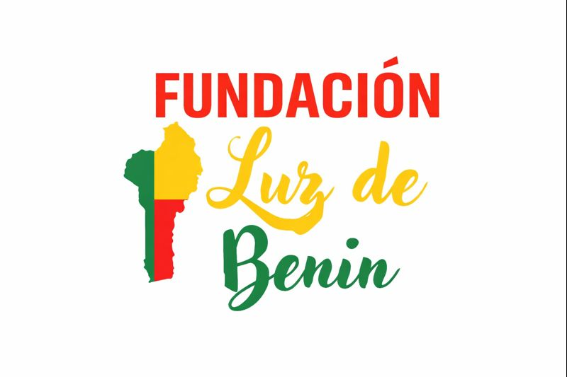

Guía completa del proyecto web — Panel de administración y despliegue
# Terminal 1 cd fundacion/backend npm run dev
Levanta la API REST en el puerto 3001. Necesario para que todo funcione.
# Terminal 2 cd fundacion/backend/admin npm run dev
Levanta el panel de administración en el puerto 5173.
# Terminal 3 cd fundacion/frontend npm run dev
Levanta la web pública en el puerto 3000.
Backend primero — El admin y el frontend dependen de él.
Admin y/o Frontend — Pueden arrancar en cualquier orden.
| Dashboard | Resumen: proyectos, posts y mensajes sin leer |
| Proyectos | Crear, editar y borrar proyectos (ES + FR) |
| Blog | Artículos en Markdown, publicar o borrador (ES + FR) |
| Páginas | Editar textos del Hero, Misión, etc. por página |
| Mensajes | Inbox del formulario de contacto |
| Donaciones | Cambiar IBAN, titular y BIC |
| Configuración | Email, teléfono, redes sociales, nombre del sitio |
Abre el panel admin en http://localhost:5173/admin/ e inicia sesión.
Navega a la sección que quieres editar usando el menú lateral.
Edita el contenido. Los campos con pestaña ES FR permiten introducir texto en ambos idiomas.
Guarda los cambios con el botón correspondiente.
Verifica en la web recargando http://localhost:3000/es/ — los cambios aparecen al instante.
| Método | Ruta |
|---|---|
| GET | /api/projects |
| GET | /api/projects/:slug |
| GET | /api/blog |
| GET | /api/blog/:slug |
| GET | /api/pages/:page |
| GET | /api/settings |
| POST | /api/contact |
| Método | Ruta |
|---|---|
| POST | /api/admin/auth/login |
| GET | /api/admin/projects |
| POST | /api/admin/projects |
| PUT | /api/admin/projects/:id |
| GET | /api/admin/blog |
| POST | /api/admin/upload |
# Desde tu PC — instala Docker y configura el servidor ssh root@IP_DEL_SERVIDOR 'bash -s' \ < scripts/setup-server.sh
Instala Docker, Git, configura el firewall y crea el usuario deploy.
# Sube el proyecto a GitHub primero, luego: ssh deploy@IP_DEL_SERVIDOR git clone https://github.com/TU/fundacion.git cd fundacion
bash scripts/deploy.sh
El script crea el .env, genera el JWT_SECRET automáticamente, construye las imágenes Docker y levanta todo.
Pide el dominio si no está configurado.
Solo dos variables. El resto lo gestiona Docker Compose internamente.
# En el servidor, tras hacer git push: bash scripts/update.sh
Reconstruye solo lo que ha cambiado. Caddy sigue activo durante la actualización (cero downtime).
# Ver logs en tiempo real docker compose logs -f # Ver estado de los servicios docker compose ps # Explorar la base de datos docker compose exec backend \ npx prisma studio # Backup de la BD docker compose cp \ backend:/data/prod.db ./backup.db
| Tabla | Contenido |
|---|---|
Project | Proyectos con título ES/FR, descripción, estado, imágenes, estadísticas |
BlogPost | Artículos con contenido Markdown ES/FR, imagen de portada, estado publicado |
PageSection | Textos editables por página y sección (Hero, Misión, etc.) |
ContactMessage | Mensajes del formulario de contacto |
Setting | Configuración del sitio: IBAN, email, redes, teléfono… |
AdminUser | Usuarios del panel de administración |
cd backend && npx prisma studio → abre en http://localhost:5555
#065F46#D1FAE5#EA580C#FEF3C7#FAFAFA#1C1917#78716C